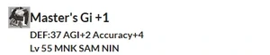

Level 75 reference · Zenith rules
Statistics


Master's gi +1
[Body] All Races
DEF: 37 AGI +2 Accuracy +4
Other Uses
Guild Points Value: None
Resale Price: ???~??? gil
Synthesis Recipes
Clothcraft (85/96)
- Yield: Master's Gi x 1
- HQ 1: Master's Gi +1 x 1
- 1 x Jujitsu Gi
- 1 x Grass Thread
- 1 x Cotton Cloth
Adapted from Eden Wiki: Master's Gi +1 · Contributors and history · CC BY-SA 4.0. Revision 44962. Layout, links and optional background text adapted for Zenith.